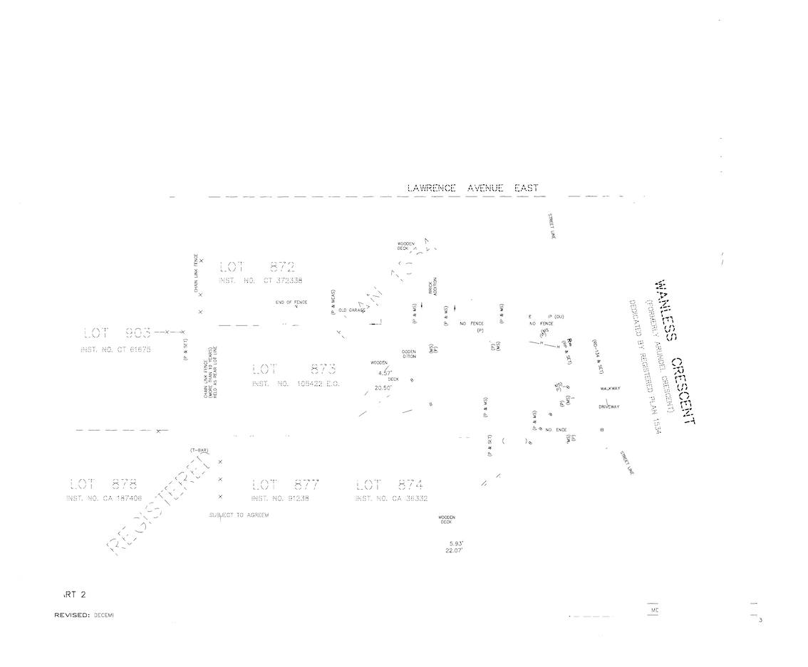

Now that recognized letters are removed, remove non-letters from the image based on segment scale and pixel count
from PIL import Image
import numpy as np
from scipy import ndimage
def label_shape_counts(filename):
''' Extract segments and their shapes from an image.'''
drawing = Image.open(filename)
# convert the PIL image to an numpy array
drawer = np.array(drawing)
# invert the image for labeling
drawed = np.logical_not(drawer)
# label each of the adjacent pixels creating segments
label_im, nb_labels = ndimage.label(drawed)
# determine the number of featurse in each segment
_, label_counts = np.unique(label_im, return_counts=True) # includes background == 0
# determine shape of each label
# note that ndimage.find_objects ignores the background, so the indexes are off by 1
slices = ndimage.find_objects(label_im)
# with a list comprehension, calculate each segment shape
label_shapes = [[slices[i][0].stop - slices[i][0].start, slices[i][1].stop - slices[i][1].start,
label_counts[i+1]]
for i in range(nb_labels)]
return label_shapes, label_im
The "Sample Letters" file used here is different from the files used for EDA and SVM training. The latter were files of individual letters that were labeled via the filename. The 'letter' file being used here is a single image with many letters in no particular arrangement, other than they are all horizontally aligned. While there are stencil fonts at obtuse angles in the original image, processing those are beyond the scope of this project.
drawing_shapes, drawing_labels = label_shape_counts('./data/output/03_66428_grey_sliced.png')
letter_shapes, letter_labels = label_shape_counts('./data/output/00_SampleLetters.png')
# figure out maximum letter glyph shape and count
max_x = 0
max_y = 0
max_count = 0
for i in letter_shapes:
if i[0] > max_x:
max_x = i[0]
if i[1] > max_y:
max_y = i[1]
if i[2] > max_count:
max_count = i[2]
print(f'Max x: {max_x}, max y: {max_y}, max pixel count: {max_count}')
Max x: 32, max y: 53, max pixel count: 971
Whiten those glyphs and create a new file
# create a list of labels from the drawing that have big glyphs
big_glyphs = [0] # include the background
image = 0
for i in drawing_shapes:
image += 1
if i[0] > max_x or i[1] > max_y or i[2] > max_count:
big_glyphs.append(image)
# zero-out labels that are too big by making them 'white'==255
drawing_not_big = np.zeros(drawing_labels.shape, dtype=np.uint8)
drawing_not_big[np.isin(drawing_labels, big_glyphs)] = 255
# convert the numpy array to a PIL image
im = Image.fromarray(drawing_not_big)
# save the image
im.save('./data/output/04_66428_not_big.png')

It would be an onerous task to sequentially search the source image for every centroid and its neighbours. Instead, subset the problem by grouping centroids based merged, dilated glyphs.